我需要一条电台控制线，连接PC和电台，能获得电台的频率和模式，能产生CW信号，能控制PTT，能将电台接收到的声音接入电脑，能把电脑的声音传给电台去发射。
几年前做这样的线的时候，都是用的串口-TTL芯片，由串口信号来控制CW电键和PTT，声音则是音频线接到PC的声卡。不过现在电脑基本上都没有串口了，所以还得一个USB串口设备来产生串口。
所以，我就打算用一个USB串口芯片，加上USB声卡来做这样一条控制线。这样，从PC只要接一根USB线，另一头就可以直接接电台了。也就是下图的样子：
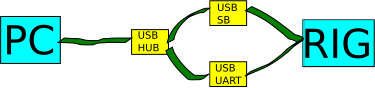
我不想做通用的，平时在用的电台没那么多型号，为主设备做一条线就可以了。下次需要接其他设备，再做一条就是了。整条线的成本就很低，犯不着为了“通用”而动脑筋增加中间接口什么的。
所以这次我做的是为ICOM 756用的。
做这条线需要以下材料：
我的USB-UART板原本用于其他目的，板上的RTS和DTR信号上是要接三极管做反相的，所以要先调整一下，用几个0欧姆电阻短接一下，让芯片的RTS和DTR信号直接通到外接的焊盘上去。
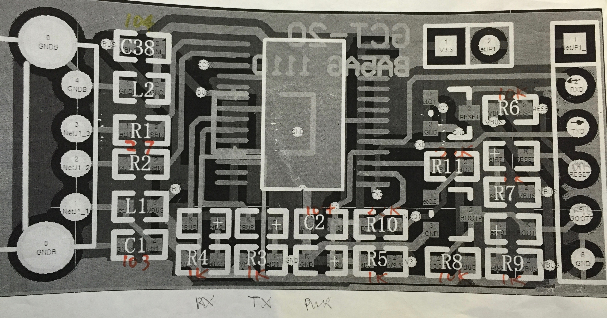
电键线是最简单的了。将DTR和地分别接到三芯6.5mm插头的中心和地上就好了。 CAT则是首先把板上的RTX和TXD两个输出段子短接，然后接到3.5mm两芯插头的中心。
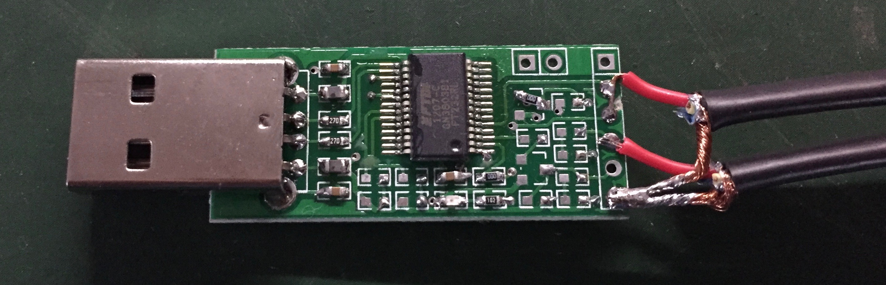
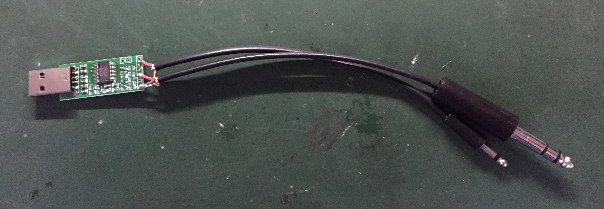
音频线有点复杂，首先来看声卡一侧，声卡的插座是4芯的：
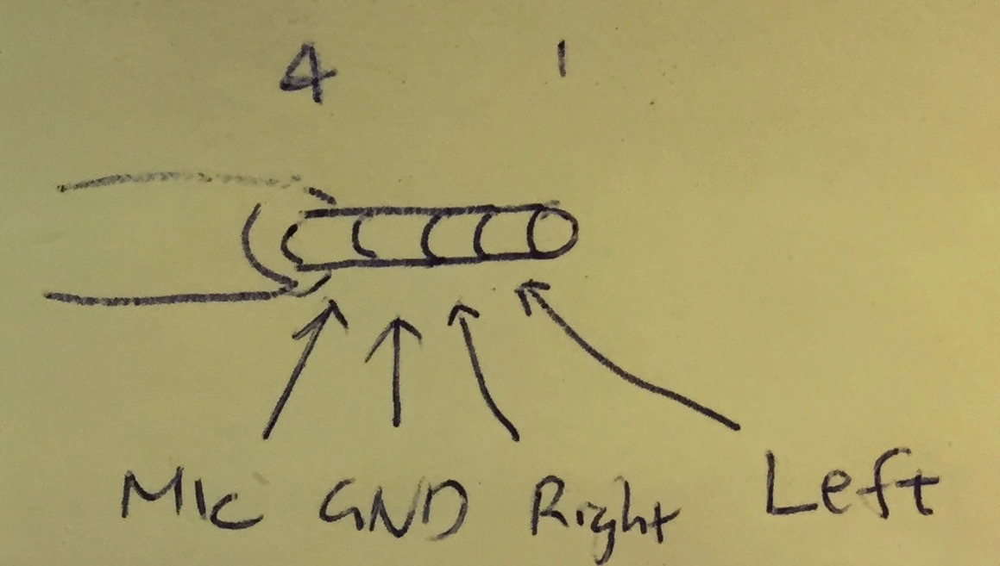
我们把左右声道直接连上，接两芯屏蔽线的黄线，插头的地接红线，最内侧的环接地。
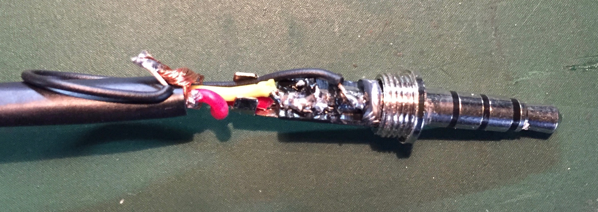
在电台一侧是圆8脚的ACC-1，插座的连线是：
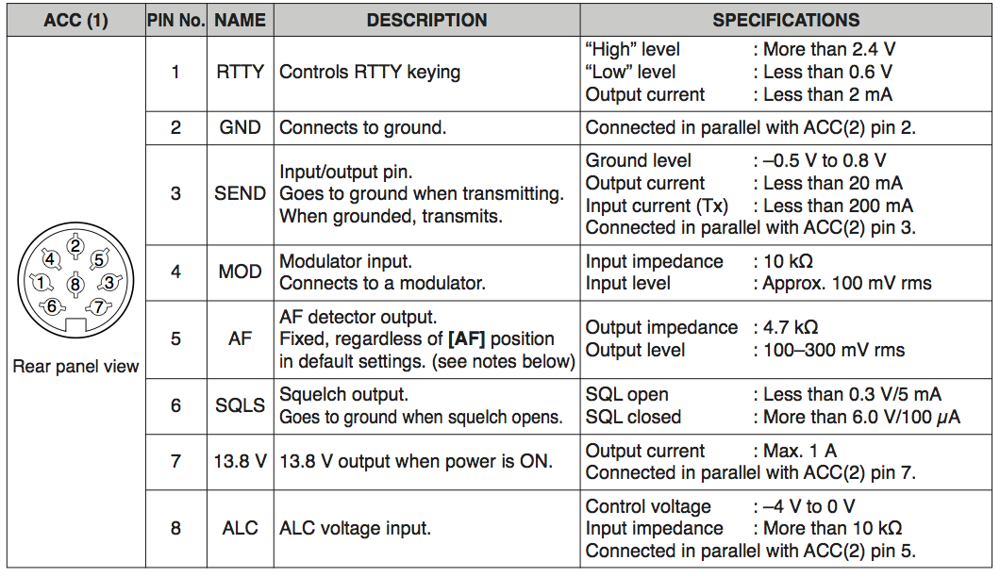
这里需要放两条两芯屏蔽线，一条连接两路音频信号，另一条连接PTT信号。
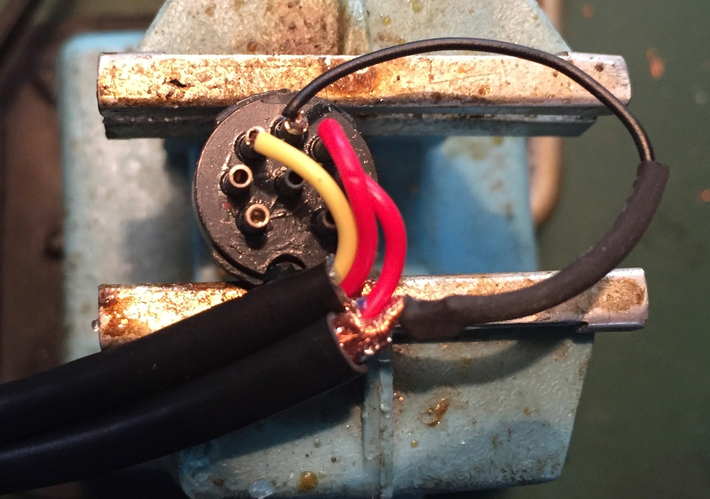
因此，对应的连线是：
| ACC1脚 | 线 | 颜色 | 对端 |
|---|---|---|---|
| 2 | 音频/PTT | 黑 | USB板的地和声卡插头的地 |
| 3 | PTT | 红 | USB板的RTS |
| 4 | 音频 | 黄 | 声卡的耳机 |
| 5 | 音频 | 红 | 声卡的话筒 |
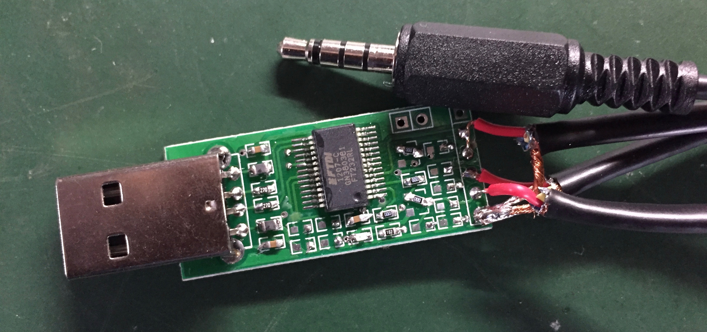 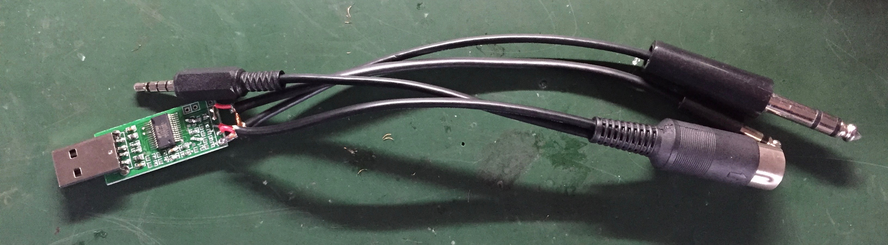
总结一下，连线是这样的： 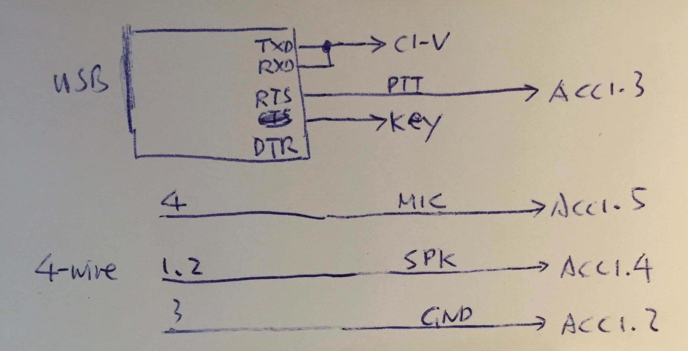
最后把USB声卡和USB-UART板插到USB HUB上就好了：
用热缩套管把整个USB-UART板封起来：
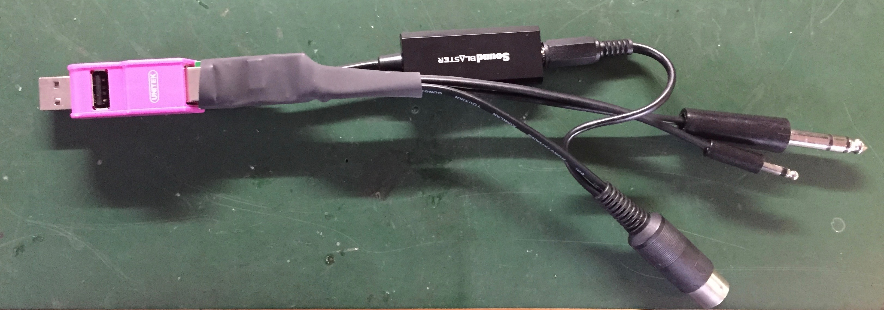
这样一条PC-电台线就完工了。